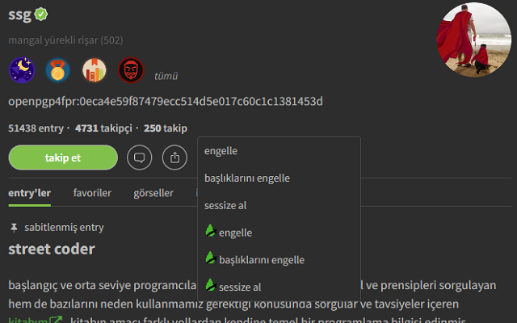

Ekşi Engel 
Versiyon notları için tıklayın
Ayarlar
Engelle veya sessize al.
Başlıklarını da engelle.
Çaylak yazarları da engelle.
Takip ettiğim yazarları engelleme.
Sadece gerekli işlemleri yap.
Yeşil ve sarı tikleri gizle.
Toplanan verileri Ekşi Engel sunucularına gönder.

Kullanım Klavuzu

- Ekşi Sözlük Arayüzü Üzerinden Kullanımı
- Eklenti Menüsünden Kullanımı
-
Eklenti simgesine tıklayarak eklenti menüsünü açın.
Gireceğim Listedeki Yazarları Engelle / Engelini Kaldır butonuna tıklayın.
Elinizdeki yazar listesini metin kutusuna yapıştırıp, Engelle veya Engeli Kaldır butonuna tıklayın. -
Eklenti simgesine tıklayarak eklenti menüsünü açın.
Tüm Engellerimi Kaldır butonuna tıklayın.
-
Entrylerin ayar menüsü güncellendi.

Yazarların sayfasındaki menü güncellendi. 